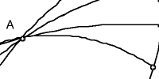

| To prepare for studying tessellations of the hyperbolic plane, we survey some of Escher's work. | |
| Next we see some of Escher's attempts to represent the infinite. | |
| A word about tessellations, regular divisions of the plane into congruent figures. | |
| What makes some geometries Non-Euclidean? | |
| To study hyperbolic geometry we use the Poincare disc. | |
| Here are some basic circle inversion constructions we shall use. | |
| Here are the concepts from hyperbolic geometry that we shall use. |  |
Return to Nonlinear tessellations.